HaQei / アニメと易経 ・ Step8 通し視聴ゲート ・ 人間承認
第42話 完成MP4 — 魔法少女まどか☆マギカ × 剥
content/062 ・ 464秒（7:44）・ 24シーン ・ 696.7MB ・ EssayGen062
🆕 修正版：通し視聴での指摘「フックからアニメへ入るところが唐突」を反映。幕1(生活の具体)→幕2(作品)の間に橋渡し「この、守ろうとするほど大事なものからこぼれていく感じ。それを、これ以上ないくらいに描き切った物語があります。魔法少女まどか☆マギカ。」を追加し、感情→作品名を自然に接続（再合成・再同期・再レンダ済み・464秒）。
台本 fork93 ✅identity-audit 全"不明" ✅timing ✅promise(冒頭overlay) ✅mix 尺461.2s ✅ピーク-3.9dB ✅幕間BGM-33.8dB ✅シーン境界 黒落ちなし(23境界) ✅
▶ 通し視聴はこちら（ローカルMP4）：
releases/062/essay-062.mp4 をQuickTime等で再生してください（696MBのためWeb共有せずローカル再生）。下は各シーンの抜き取りフレーム（黒落ち/顔/文字混入/スタイルの目視用）。コンタクトシート（24シーン・抜き取りフレーム）

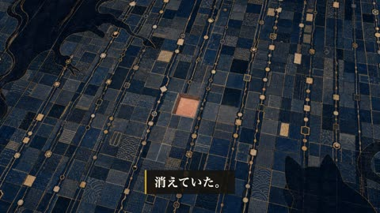
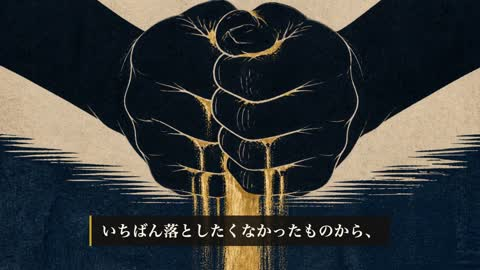
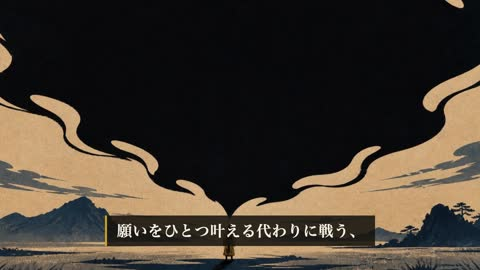
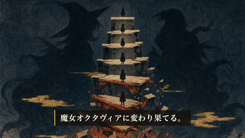
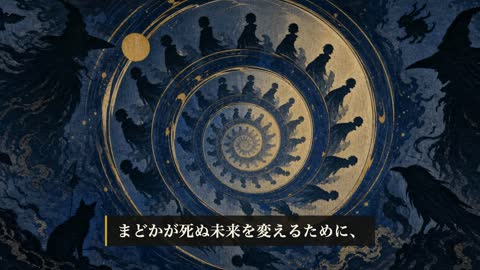
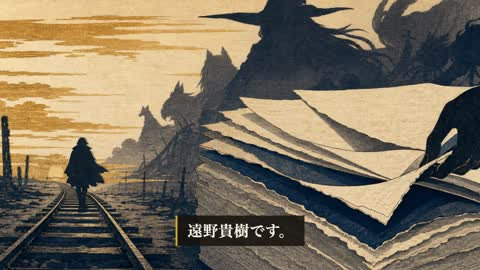
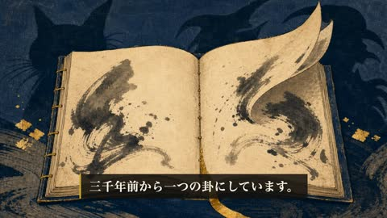

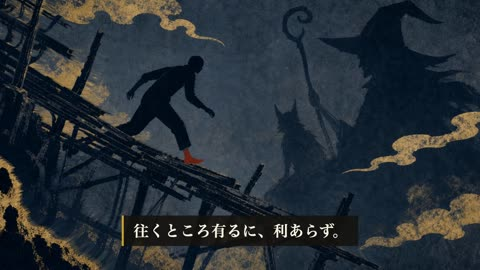
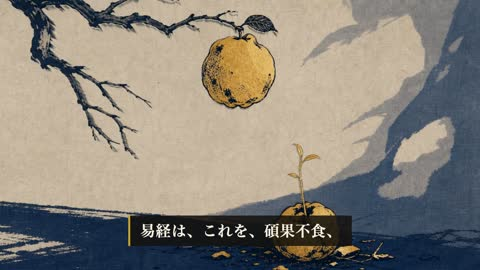
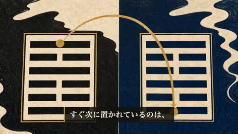
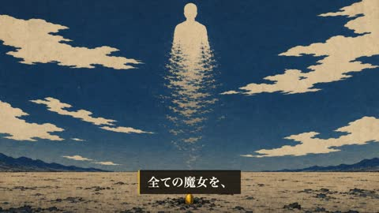
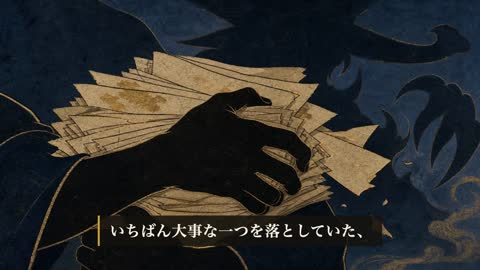
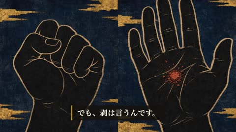
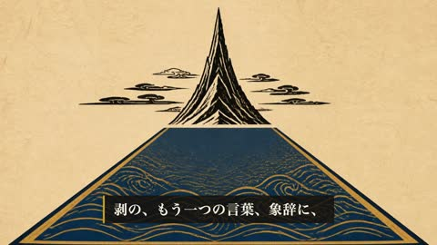
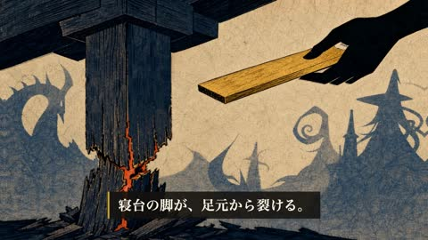
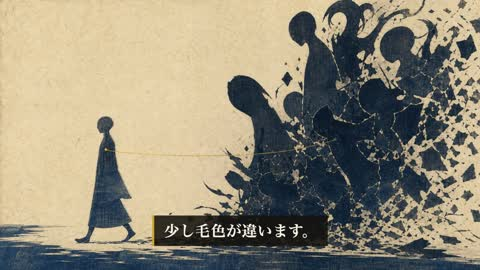
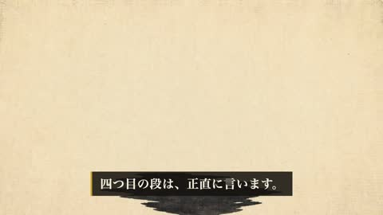
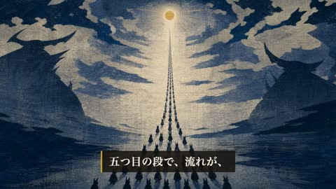
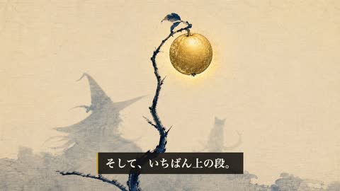
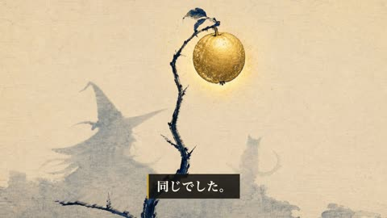
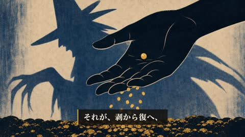

確認ポイント（自己検証済み）
・冒頭0-8秒に「魔法少女まどか☆マギカ 鹿目まどか／易経・剥（はく）」オーバーレイ表示（H52）
・GUA6六爻図が剝卦を正確に描画（下から陰5＋最上に金の陽1＝碩果不食・db決定論）
・全カット木版浮世絵・顔なし・画像内文字なし・固有意匠なし（identity-audit 全"不明"）
・余韻＝剝→復の二相（抱え込んで崩れる／手を開いて一果が芽吹く）を顔なしシルエットで対比
・シーン境界の黒落ちゼロ（過去ep1-38の全話にあった不具合を回避）
・GUA6六爻図が剝卦を正確に描画（下から陰5＋最上に金の陽1＝碩果不食・db決定論）
・全カット木版浮世絵・顔なし・画像内文字なし・固有意匠なし（identity-audit 全"不明"）
・余韻＝剝→復の二相（抱え込んで崩れる／手を開いて一果が芽吹く）を顔なしシルエットで対比
・シーン境界の黒落ちゼロ（過去ep1-38の全話にあった不具合を回避）
ご判断ください（通し視聴 品質ゲート4/5）：この動画で承認（→公開キット：Tier Aサムネ・概要欄・ショート・TikTok素材へ）／ 直したい箇所を指定（BGM差替・特定カット再生成・見せ場モーション追加 等）。
品質ゲート5項目: ①冒頭30秒で緊張 ②「へえ」3つ ③ビジュアルがチャッチーでない ④専門用語ゼロでも成立する日本語 ⑤余韻/断言で締め。
品質ゲート5項目: ①冒頭30秒で緊張 ②「へえ」3つ ③ビジュアルがチャッチーでない ④専門用語ゼロでも成立する日本語 ⑤余韻/断言で締め。
MP4=
releases/062/essay-062.mp4。台本=full_script.json / 採点=creative-loops/essay-script-062-v2。※BGMはep40の落ち着いた曲を暫定流用（差替可）。